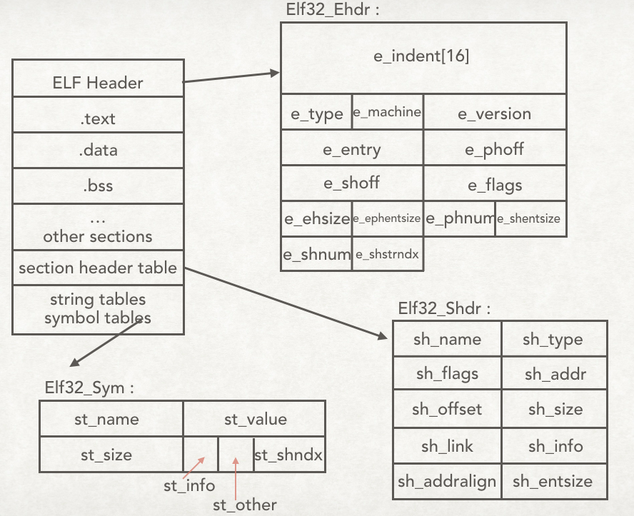

OVERVIEW
下图定性地描述了ELF文件的总体结构(以32位系统为例), 下文中将详细展开图中的每一项.

可用readelf -h查看ELF Header信息. ELF文件的魔数为0x7F454C46, 即\x7fELF
32 bit
1 2 3 4 5 6 7 8 9 10 11 12 13 14 15 16
| typedef struct elf32_hdr { unsigned char e_ident[EI_NIDENT]; Elf32_Half e_type; Elf32_Half e_machine; Elf32_Word e_version; Elf32_Addr e_entry; Elf32_Off e_phoff; Elf32_Off e_shoff; Elf32_Word e_flags; Elf32_Half e_ehsize; Elf32_Half e_phentsize; Elf32_Half e_phnum; Elf32_Half e_shentsize; Elf32_Half e_shnum; Elf32_Half e_shstrndx; } Elf32_Ehdr;
|
64 bit
1 2 3 4 5 6 7 8 9 10 11 12 13 14 15 16
| typedef struct elf64_hdr { unsigned char e_ident[16]; Elf64_Half e_type; Elf64_Half e_machine; Elf64_Word e_version; Elf64_Addr e_entry; Elf64_Off e_phoff; Elf64_Off e_shoff; Elf64_Word e_flags; Elf64_Half e_ehsize; Elf64_Half e_phentsize; Elf64_Half e_phnum; Elf64_Half e_shentsize; Elf64_Half e_shnum; Elf64_Half e_shstrndx; } Elf64_Ehdr;
|
member
| member |
usage |
| e_ident |
magic & class & data & verison & OS/ABI & ABI version |
| e_type |
ELF文件类型 |
| e_machine |
ELF文件的CPU平台属性 |
| e_version |
ELF版本 |
| e_entry |
ELF程序的入口虚拟地址 |
| e_phoff |
start of program headers |
| e_shoff |
段表在文件中的偏移量 |
| e_word |
ELF标志位 |
| e_ehsize |
ELF文件头大小 |
| e_phentsize |
size of program headers |
| e_phnum |
number of program headers |
| e_shentsize |
段表描述符大小 |
| e_shnum |
段表描述符数量, 即段的数量 |
| e_shsrendx |
段表字符串表所在的段在段表中的下标 |
可用readelf -S查看段表.
32 bit
1 2 3 4 5 6 7 8 9 10 11 12
| typedef struct elf32_shdr { Elf32_Word sh_name; Elf32_Word sh_type; Elf32_Word sh_flags; Elf32_Addr sh_addr; Elf32_Off sh_offset; Elf32_Word sh_size; Elf32_Word sh_link; Elf32_Word sh_info; Elf32_Word sh_addralign; Elf32_Word sh_entsize; } Elf32_Shdr;
|
64 bit
1 2 3 4 5 6 7 8 9 10 11 12
| typedef struct elf64_shdr { Elf64_Word sh_name; Elf64_Word sh_type; Elf64_Xword sh_flags; Elf64_Addr sh_addr; Elf64_Off sh_offset; Elf64_Xword sh_size; Elf64_Word sh_link; Elf64_Word sh_info; Elf64_Xword sh_addralign; Elf64_Xword sh_entsize; } Elf64_Shdr;
|
member
| member |
usage |
| sh_name |
段名字符串在.shstrtab字符串表中的偏移 |
| sh_type |
段的类型 |
| sh_flags |
段的标志位 |
| sh_addr |
段被加载后在进程空间的虚拟地址 |
| sh_offset |
段在文件中的偏移 |
| sh_size |
段的长度 |
| sh_link & sh_info |
段的链接信息 |
| sh_addralign |
段地址对齐, 为2的n次. 若为0或1, 说明该段没有对齐要求 |
| sh_entisze |
项的长度 |
sh_type : 段类型
1 2 3 4 5 6 7 8 9 10 11 12 13 14 15 16 17 18
| #define SHT_NULL 0 #define SHT_PROGBITS 1 #define SHT_SYMTAB 2 #define SHT_STRTAB 3 #define SHT_RELA 4 #define SHT_HASH 5 #define SHT_DYNAMIC 6 #define SHT_NOTE 7 #define SHT_NOBITS 8 #define SHT_REL 9 #define SHT_SHLIB 10 #define SHT_DYNSYM 11 #define SHT_NUM 12 #define SHT_LOPROC 0x70000000 #define SHT_HIPROC 0x7fffffff #define SHT_LOUSER 0x80000000 #define SHT_HIUSER 0xffffffff
|
sh_flag : 段标志位
1 2 3 4 5
| #define SHF_WRITE 0x1 #define SHF_ALLOC 0x2 #define SHF_EXECINSTR 0x4 #define SHF_MASKPROC 0xf0000000
|
Symbol Table
可以用readelf -s查看符号表信息.
32 bit
1 2 3 4 5 6 7 8
| typedef struct elf32_sym{ Elf32_Word st_name; Elf32_Addr st_value; Elf32_Word st_size; unsigned char st_info; unsigned char st_other; Elf32_Half st_shndx; } Elf32_Sym;
|
64 bit
1 2 3 4 5 6 7 8
| typedef struct elf64_sym { Elf64_Word st_name; unsigned char st_info; unsigned char st_other; Elf64_Half st_shndx; Elf64_Addr st_value; Elf64_Xword st_size; } Elf64_Sym;
|
| member |
usage |
| st_name |
符号名, 即该符号名在字符串表中的下标 |
| st_value |
符号相对应的值(目标文件:符号在段中的偏移, 可执行文件: 符号虚拟地址) |
| st_size |
符号大小(占用空间) |
| st_info |
符号类型和绑定信息 |
| st_other |
为0, 无用 |
| st_shndx |
该符号所在的段 |
st_info : 符号类型及绑定信息
1 2 3 4 5 6 7 8 9 10 11 12
| #define STB_LOCAL 0 #define STB_GLOBAL 1 #define STB_WEAK 2 #define STT_NOTYPE 0 #define STT_OBJECT 1 #define STT_FUNC 2 #define STT_SECTION 3 #define STT_FILE 4 #define STT_COMMON 5 #define STT_TLS 6
|
st_shndx : 符号所在段
若符号定义在本目标文件中, 那么st_shndx表示符号所在段在段表中的下标. 对于一些特殊符号, st_shndx有特殊的值.
1 2 3 4 5 6 7 8
| #define SHN_UNDEF 0 #define SHN_LORESERVE 0xff00 #define SHN_LOPROC 0xff00 #define SHN_HIPROC 0xff1f #define SHN_ABS 0xfff1 #define SHN_COMMON 0xfff2 #define SHN_HIRESERVE 0xffff
|